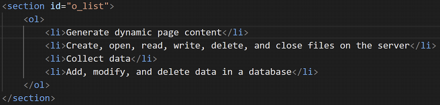

Adds an icon to the top left of each html file, implemented in Index
Website used as reference: Click Here
Gives the table a cleaner look, in line with the aesthetic of the webpage, implemented in Index
Images were also included and resized within the table to demonstrate the use of two different skills merged together.
Website used as reference: Click Here
Creates visual interest within the composition by providing a focal point through the principle of contrast Google
Un-ordered List (CSS)
Ordered List (CSS)
Un-ordered List (HTML)
Ordered List (CSS)

Website used as reference: Click Here